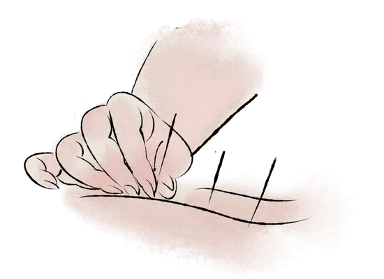
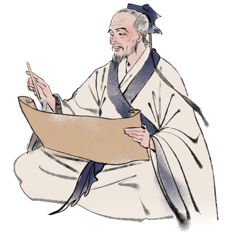

華佗·博學濟世
一 初出茅廬
华佗是沛国谯县人。外出到徐州求学，同时通晓几种儒家经典。沛国相陈圭推荐他为孝廉，太尉黄琬征召他，他都不去就任。华佗懂得养生的方法，当时的人认为他年龄将近一百岁，可外表还像壮年的容貌。
他又精通处方医药，他给人治病，配制汤药不过用几味药，心里明了药剂的分量，不用再称重量，药煮熟就让病人饮服，告诉病人服药的注意事项，病人离开后，病就痊愈了。
如果需要灸疗，也不过一两个穴位，病痛就应手消除。如果需要针疗，也不过扎一两个穴位，下针时对病人说：“针感应当延伸到某处，如果到了，告诉我。”当病人说“已经到了”，应声便起针，病痛很快就痊愈了。如果病患集结郁积在体内，应须剖开身体割除的，就饮服他的“麻沸散”，一会儿病人便像醉死一样，没有什么知觉，于是开刀后取出结积物。病患如果在肠中，就切断肠子进行清洗，再缝合腹部刀口，抹上药膏，四五天后，病好了，不再疼痛，一个月之内，就痊愈复原了。
华佗字元化，沛国谯人也。游学徐土，兼通数经。沛相陈理举孝廉，太尉黄琬辟，皆不就。晓养性之术，时人以为年且百岁而貌有壮容。
又精方药，其疗疾，合汤不过数种，心解分剂，不复称量煮熟便饮，语其节度，舍去辄愈。若当灸，不过一两处，病亦应除。若当针，亦不过一两处，下针言：“当引某许，若至，语吾。”病者言“已到”，应便拔针，病亦行差。若病结积在内，当须割割者，便饮其麻沸散，须臾便如醉死，无所知，因破取。病若在肠中，便断肠前洗，缝腹膏摩，四五日，不痛，一月之间，即平复矣。（《三国志·华佗传》）
二 行醫之旅
“华佗之医诊，杜夔之声乐，朱建平之相术，周宣之相梦，管辂之术筮，诚皆玄妙之殊巧，非常之绝技矣。昔史迁著扁鹊、仓公、日者之传，所以广异闻而表奇事也。故存录云尔。”（《三国志》）——这是一位“神医”的故事。
-
明有一位郡守生病，华佗认为此人发一下大怒病就会好，于是接受了太守很多的礼物却不给他治病，不多久就不辞而别，留下一封信大骂太守。郡太守果然大怒，派人追杀华佗，太守的儿子知道内情，嘱咐使吏不要追赶。太守更加生气，接着吐出数升黑血，病就完全好了。
有一郡守病，他以为其人盛怒则差，乃多受其货不加治，无何弃去，留书骂之。郡守果大怒，人追杀陀。郡守子知之，嘱使勿逐，守嗔患，吐黑血数升而愈。（《三国志·华佗传》）
-
华佗的亳州同乡曹操，因为常犯头痛眩晕病，闻听华佗医术精湛，就征召他到许昌给自己治病，让他常守在身边。曹操被脑神经痛所苦，每当发作，就精神烦乱，眼睛昏花。华佗只要针刺膈俞穴，应手而愈。
太祖闻而召佗，佗常在左右，太祖苦头风，每发，心乱目眩。佗针鬲，随手而差。（《三国志·华佗传》）
 -
华佗卓绝的医技，大都像以上所说的那样。然而他本是读书人，却被人看成是以医术为职业的，心里常感懊悔。后来曹操亲自处理国事，病情更加严重，就让华佗专门为他个人看病。华佗说：“这病近乎难以治好，不断地进行治疗，可以延长一些寿命。”华佗长期远离家乡，想回去看看，到家后，用妻子有病为借口来推托，多次请求延长假期不肯回来。
佗久远家思归，因曰：“当得家书，方欲暂还耳。”到家，辞以妻病，数乞期不反。太祖累书呼......佗恃能厌食事，犹不上道。（《三国志·华佗传》）
-
曹操很生气，后把华佗递解交付许昌监狱，拷问要他服罪。荀彧向曹操求情说：“华佗医术的确精巧，关系着人的生命安危，应该宽容赦免他。”曹操说：“不用担心，天下会没有这种无能鼠辈吗？”判决了华佗死罪。
太祖大怒，使人往检：若妻信病，赐小豆四十斛，宽假限日，若其虚诈，便收送之。于是传付许狱，考验首服。荀彧请曰：“佗术实工，人命所悬，宜含宥之。”太祖曰：“不忧，天下当无此鼠辈耶？”遂考竟佗。（《三国志·华佗传》）
-
华佗死了以后，曹操脑神经痛仍旧没有好。曹操说：“华佗本来能够治好这种病。这小子有意留着我的病根，想借此来抬高自己的地位，既然如此，如果我不杀掉他，他最终也不会替我断掉这病根的。”直到后来他的爱子仓舒病危，曹操才感叹地说：“我后悔杀了华佗，使这个儿子活活地死去了。”
佗死后，太祖头风未除。太祖曰：“佗能愈此，小人养吾病欲以自重然吾不杀此子亦终当不为我断此根原耳及后爱子仓舒病困太祖叹曰吾悔杀华佗令此儿强死也。”（《三国志·华佗传》）
-
华佗临死前，拿出一卷医书给守狱的官吏，说：“这书可以用来救活人。”狱吏害怕触犯法律不敢接受，华佗也不勉强，讨火来把书烧掉了。
佗临死，出一卷书与狱吏，曰：“此可以活人。”吏畏法不受，佗亦不强，索火烧之。（《三国志·华佗传》）
張仲景·亂世立志
一 少年大志
约公元151年，张仲景出生在东汉末年的一个没落的官僚家庭。当时社会，人心涣散，朝政不安。黎民百姓饱受战乱之灾，加上疫病流行，很多人死于非命，“生灵涂炭，横尸遍野”。而府衙自顾不暇，为争权夺势，发动战争。这使张仲景从小就厌恶官场，轻视仕途，怜悯百姓，萌发了学医救民的愿望。
余每览越人入虢之诊，望齐侯之色，未尝不慨然叹其才秀也。怪当今居世之士，曾不留神医药，精究方术，上以疗君亲之疾，下以救贫贱之厄，中以保身长全，以养其生，但竞逐荣势，企踵权豪，孜孜汲汲，惟名利是务，崇饰其末，忽弃其本，华其外，而悴其内。（《伤寒论》序）
二 仲景其人
“医者仁心上以疗君亲之疾，下以救贫贱之厄，中以保生长全，以养其身”——这是撰写了《伤寒杂病论》的“医圣”的故事。
-
汉桓帝延熹四年（公元161年），张仲景10岁左右时，就拜同郡医生张伯祖为师，学习医术。张伯祖是当时一位有名的医家，他性格沉稳，生活简朴，对医学刻苦钻研。每次给病人看病、开方，都十分精心，深思熟虑。经他治疗过的病人，十有八九都能痊愈，故很受百姓尊重。
张仲景跟他学医非常用心，无论是外出诊病、抄方抓药，还是上山采药、回家炮制，不怕苦不怕累。张伯祖也非常喜欢这个学生，把自己毕生行医积累的丰富经验，毫无保留地传给他。
张机，字仲景，南阳人也。学医于同郡张伯祖，尽得其传。工于治疗，尤精经方，遂大有时誉。（《医史·张仲景传》）
-
尽管张仲景从小就厌恶官场，但他父亲曾在朝廷做过官，东汉末期又多举世家子弟，张仲景承袭家门，在灵帝时（约公元168-188年），被州郡举为孝廉，进入官场。
在建安年间（公元196-219年），他被朝廷指派为长沙太守。 但他仍用自己的医术，为百姓解除病痛。在封建时代，做官的不能随便进入民宅，接近百姓。于是张仲景择定每月初一和十五两天，大开衙门，不问政事，让患病百姓进来，他端正地坐在大堂上，挨个仔细为群众诊治。
汉灵帝时举孝廉，官至长沙太守。与同郡何题客游洛阳。顾探知其学，谓人曰：“仲景之术横干伯祖，起病之验，虽鬼神莫能知之，真一世之神医也。”（《医史·张仲景传》）
-
他曾仔细研读过《素问》《灵枢》《难经》《阴阳大论》《胎胪药录》等古医书。《素问》说：“夫热病者，皆伤寒之类也。”又说：“人之伤于寒也，则为病热。”
张仲景根据自己的实践对这个理论作了发展。他认为伤寒是一切热病的总名称，也就是一切因为外感而引起的疾病，都可以叫做“伤寒”。他还对前人留下来的“辨证论治”的治病原则，认真地加以研究，从而提出了“六经论伤寒”的新见解。
撰用《素问》《九卷》《八十一难》《阴阳大论》《胎胪药录》，并平脉辨证，为《伤寒杂病论》，合十六卷。（《医史·张仲景传》）

-
经过几十年的奋斗，张仲景勤求古训、博采众方，融以个人在临床实践中的经验，写出了《伤寒杂病论》十六卷（又名《伤寒卒病论》）。这部著作在公元210年左右写成而“大行于世”。
其文辞简古奥雅，古今治伤寒者，未有能出其外者也。最为众方之祖，又悉依本草。但其善诊脉，明气候，以意消息之耳。华佗读而喜曰："此真活人书也。"（《医史·张仲景传》）

-
张仲景为人谦虚谨慎，提倡终身坚持学习。他特别表明自己从青少年时期就热爱医学，请允许他扎扎实实地按照孔子的话去做，因为医学没有止境，必须终身坚持学习，活到老，学到老。
张仲景还为后人树立了淳朴无华、勤恳踏实的学风。《伤寒杂病论》著述风格朴实简练，毫无浮辞空论，对后世中医著作影响甚大。他诊病和学习时遇到一丝一毫的疑问，即“考校以求验”，一定要弄清楚是怎么回事。
孔子云：生而知之者上。学则亚之。多闻博识，知之次也。余宿尚方术，请事斯语。（《伤寒论》序）